实验环境
我使用的是 Ubuntu 24.04.4，基本环境配置见ARP攻击原理学习
核心工具：Docker / Docker-Compose、Firefox浏览器、nano / vim
| 节点类型 | IP 地址 | 域名 | 作用说明 |
|---|---|---|---|
| 靶机（IoT 恒温器） | 192.168.60.80 | www.seedIoT32.com | 位于内网，被路由器防火墙保护的目标设备 |
| 本地 DNS 缓存服务器 | 10.9.0.53 | 无 | 模拟受害者网络中的 DNS 解析与缓存 |
| 攻击者 Web 服务器 | 10.9.0.180 | www.attacker32.com | 提供恶意网页或脚本 |
| 攻击者 DNS 服务器 | 10.9.0.153 | 无 | 解析，实现 DNS 重绑定 |
修改Firefox浏览器的DNS缓存时间
Firefox 浏览器默认会缓存 DNS 查询结果 60 秒。为了提高实验效率，让 DNS 重绑定攻击能快速生效，需要人为缩短缓存时间
在 Firefox 浏览器地址栏输入 about:config并回车，接受风险提示，然后在搜索栏输入network.dnsCacheExpiration
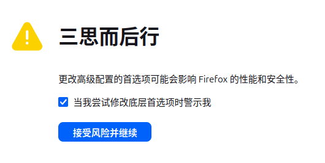
双击出现的两个结果network.dnsCacheExpiration和network.dnsCacheExpirationGracePeriod，将值更改为10秒，重启浏览器使配置生效
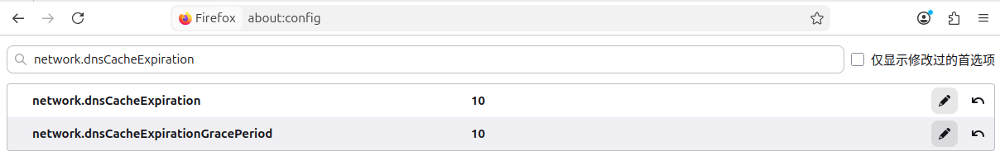
这样可以更快触发二次解析
配置本地DNS服务器
Ubuntu 24.04 使用 systemd-resolved 管理 DNS，
/etc/resolv.conf是自动生成的文件，不应该直接编辑。为了保证实验过程中 DNS 可控，采用替换resolv.conf的方式
备份原配置
|
|
创建新的静态配置
|
|
写入下面一行，这样系统所有 DNS 请求将直接发送到实验 DNS 服务器
|
|
实验完成后，执行以下命令即可恢复，不会影响正常的网络使用
|
|
修改本地Host文件
将 IoT 域名手动解析到内网地址
编辑 hosts 文件
|
|
在文件末尾添加以下映射，保存并退出
|
|
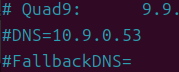
启动 Docker 容器
先在虚拟机里下载实验文件，如果没有 wget，也可以用浏览器下载再拖进去
|
|
下载完在当前目录解压
|
|
这里一定要在 Linux 里解压，是因为 Windows 解压会把换行符从 LF 变成 CRLF，容器里的脚本在执行时就可能报 exec format error
解压后进入目录
|
|
启动实验环境
|
|
在浏览器中分别访问
确认页面是否可以正常打开
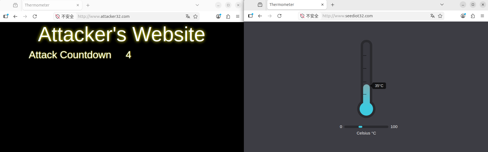
验证同源策略
依次访问并点击修改按钮：
前两个可以成功修改温度，
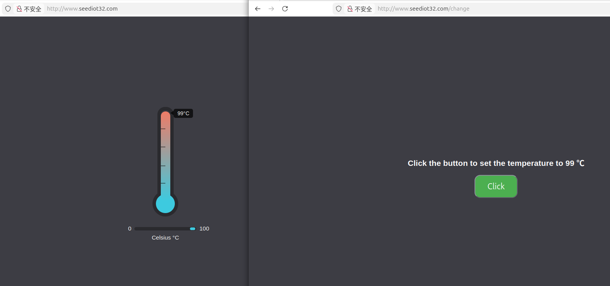
第三个失败
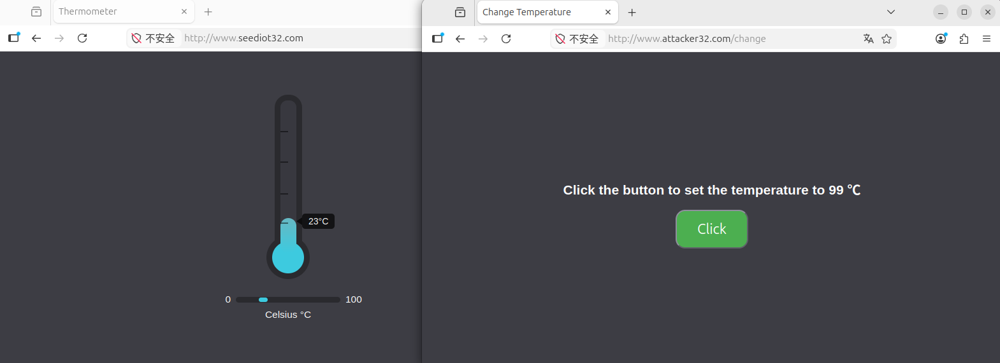
前两个属于同源请求，能够成功修改温度。第三个 URL 由于与目标站点的域名不同，触发了浏览器的同源策略限制
按 F12 可以在控制台看到请求被拦截的 CORS 报错
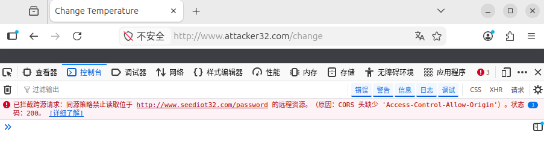
修改攻击脚本
修改攻击者的前端脚本，使其向自身域名发送请求，从而在前端骗过 SOP 检验
进入攻击者容器：
|
|
修改 JS 脚本
|
|
将文件第一行从靶机域名修改为自身域名，保存并退出
|
|
重启容器
|
|
刷新攻击页面。此时同源策略已放行，F12 控制台不再报错，但温度仍未改变。因为请求实际发给了攻击者的外网 Web 服务器，而不是真正的 IoT 靶机，返回状态码405 METHOD NOT ALLOWED
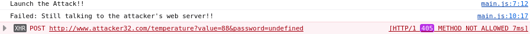
DNS 重绑定攻击
篡改攻击者的 DNS A 记录，将域名解析结果从 Web 服务器切换为内网 IoT 设备
进入攻击者 DNS 容器
|
|
编辑区域配置文件
|
|
修改：
- 将 TTL 设为较小值
- 找到 www 对应的记录，将 IP 篡改为 IoT 靶机 IP，保存退出
|
|
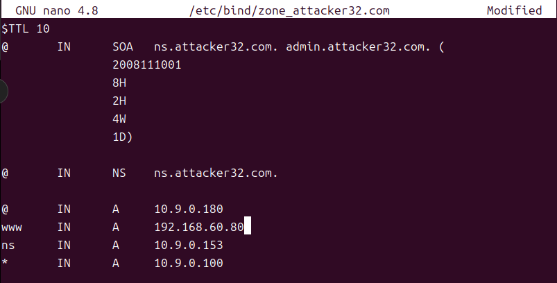
重新加载 DNS 配置，清空缓存
|
|
重新进入攻击者 DNS 容器
|
|
清空缓存
|
|
攻击效果
返回受害者浏览器。由于步骤一设置了 10s 的缓存过期时间，当倒计时脚本重新发起请求时，浏览器重新发起了 DNS 查询，获取到了篡改后的 IoT 设备 IP
由于浏览器只核对请求的域名是否一致，也就是 www.attacker32.com，因此 SOP 予以放行。最终，请求成功穿透防火墙打入内网靶机，将温度修改至 88 度
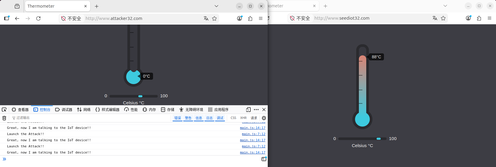
结论
实验原理：
IoT 设备部署在内网，外部无法直接访问，同时浏览器同源策略限制跨域请求。DNS 重绑定的核心在于浏览器只校验域名是否一致，而不关心该域名解析到的 IP 是否发生变化。
在本实验中，攻击者借助低 TTL 和 DNS 重新解析，将浏览器从访问外网服务器引导至内网设备，实现了对 IoT 设备的越权操作。本质上浏览器被利用为攻击者的代理，从而绕过了网络边界防护
攻击过程：
受害者缩短浏览器 DNS 缓存时间，使解析更快更新，而攻击者知道内网IoT设备的IP地址
受害者访问了攻击者的恶意域名，浏览器加载页面并执行其中的脚本。攻击脚本尝试访问IoT设备但因为跨域被同源策略拦截
攻击者将脚本的请求域名改成当前页面的域名，请求在同源策略下被允许，但此时域名仍然解析到攻击者服务器，请求实际是发给攻击者端
攻击者修改DNS服务器中的配置，缩短TTL并将域名指向 IoT 设备。这样当浏览器缓存过期再次解析时，得到的是内网 IP。脚本继续向同一个域名发请求，但目标已经变成 IoT 设备，从而完成对内网设备的攻击
踩坑记录
resolvconf 路径不存在
将系统 DNS 指向实验环境中的 DNS 服务器
|
|
提示此文件不存在
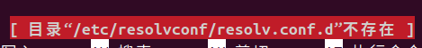
查看resolvconf文件夹，发现连这个文件夹都不存在，判断是ubuntu版本不同导致目录结构不同
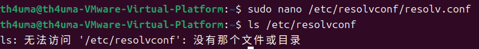
/etc/resolv.conf 无法修改
查看/etc/resolv.conf发现虽然文件存在但不可以编辑
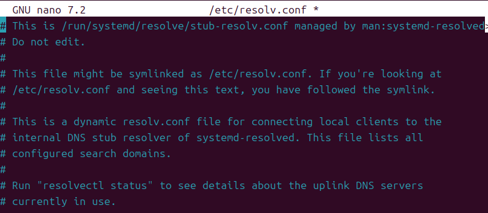
可以看到这一行This is /run/systemd/resolve/stub-resolv.conf managed by man:systemd-resolved>，说明当前 DNS 由systemd-resolved管理
修改 resolved.conf 不生效
我修改了systemd-resolved配置
|
|
添加这一行
|
|
然后重启服务
|
|
使用 resolvectl status 查看，发现 DNS 并未生效
|
|
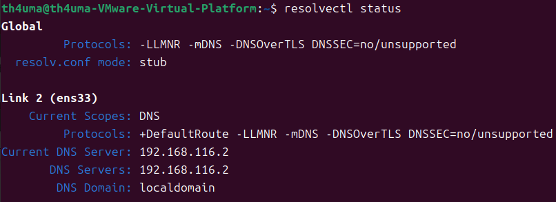
这是因为 systemd-resolved 的优先级机制中，网卡 DNS 配置优先级高于 resolved.conf 配置，也就是说网卡（ens33）直接覆盖了刚刚写的 DNS
resolvectl dns 是临时方案
手动指定网卡 DNS
|
|
这个命令是临时的，重启就没了，好处是适合实验，不影响环境
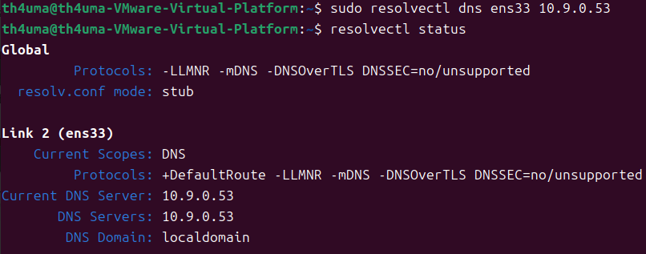
attacker 域名解析到 GoDaddy
在浏览器中访问www.attacker32.com，发现显示 GoDaddy 停放页
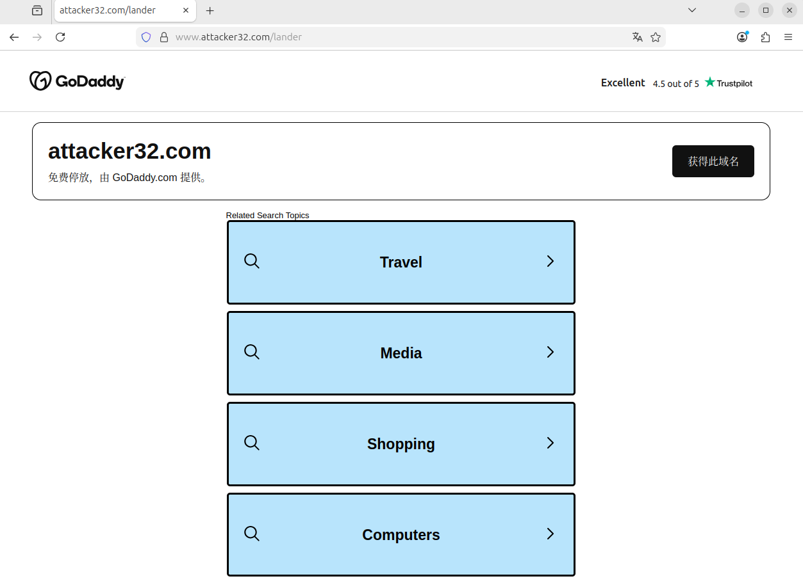
通过命令验证：
|
|
返回下面的IP，说明解析到了错误的地址
|
|
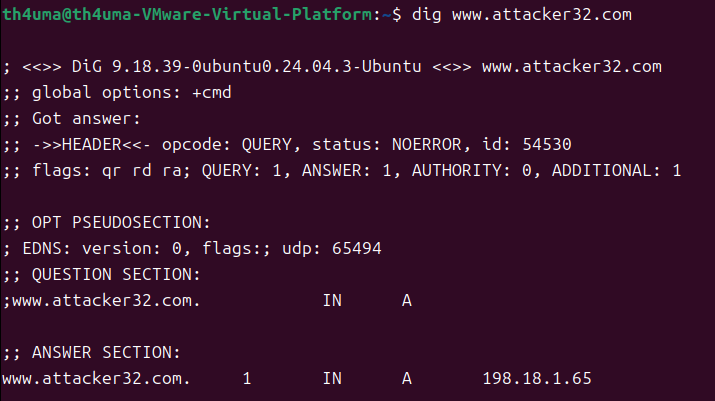
同时验证攻击机服务
|
|
可以正常访问，说明 Web 服务运行正常
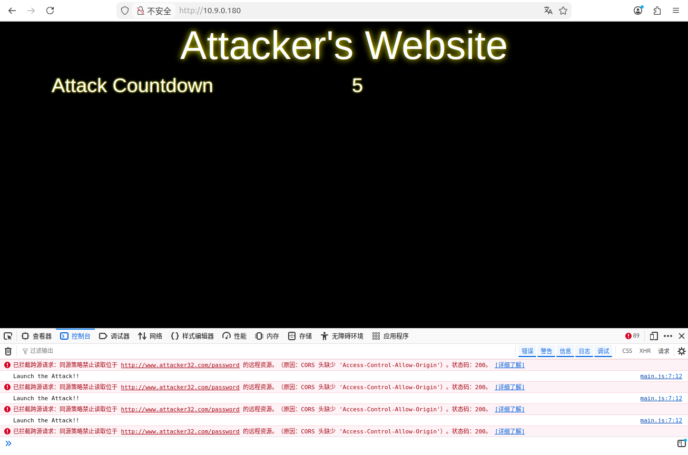
清理 systemd-resolved 缓存
|
|
直接查询实验 DNS，返回正确结果 10.9.0.180，说明容器服务正常
|
|
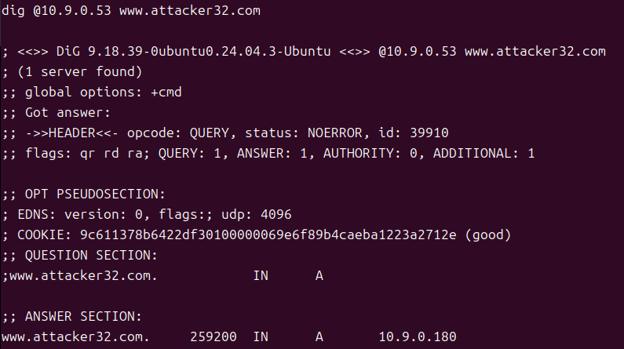
尝试清除浏览器缓存，关闭安全浏览和doh都无效，访问域名会提示不安全一秒左右，然后跳转到错误的页面。最后通过替换resolv.conf使域名可以正常访问
攻击者域名未重绑定iot设备
重新加载 DNS 配置，清空缓存这一步我输入了下面的命令
|
|
但回到浏览器发现依旧报错405
最后尝试先执行第一个命令，然后exit退出并重新进入容器，再执行第二个命令，问题解决
这是因为在连续输入命令时，BIND 服务的配置重载尚未完成，就执行了缓存清空，导致本地 DNS 仍然抓取并缓存了旧的解析记录